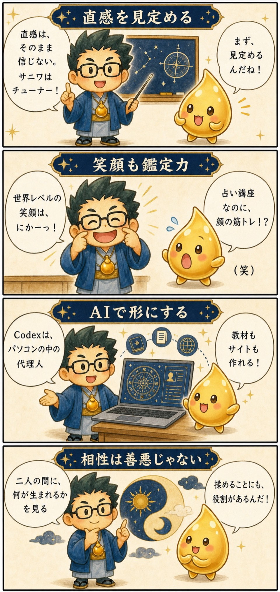

第3期 リアル講座・第3回
審神者・干支学・AIで実践鑑定
この回の要約
直感を、相手に届く鑑定へ変える。
審神者（サニワ）の役割を入口に、干支学・動物占い・十干十二支で情報を見定め、笑顔・うなずき・相槌で相手から話を引き出し、AIも補助に使いながら実践鑑定へつなげました。
4コマ漫画でつかむ

タイムスタンプ
時間を押すと、上の動画がその場面から再生されます。
覚えておきたいこと
- 結果を一方的に言うのではなく、「今の悩みとつながりますか？」と確認する。
- 短所に見える特徴を、役割・才能・使い方へ翻訳する。
- AIは命式作成や整理を助ける外部記憶。鑑定の結論と言葉は人が確認する。
- 相談者が重要感を持てるよう、笑顔・うなずき・相槌を意識する。
復習ポイント
講義内の占術上の説明・時代の読み・象徴的な解釈は、講師の見立てです。客観的な事実や将来を保証するものではありません。